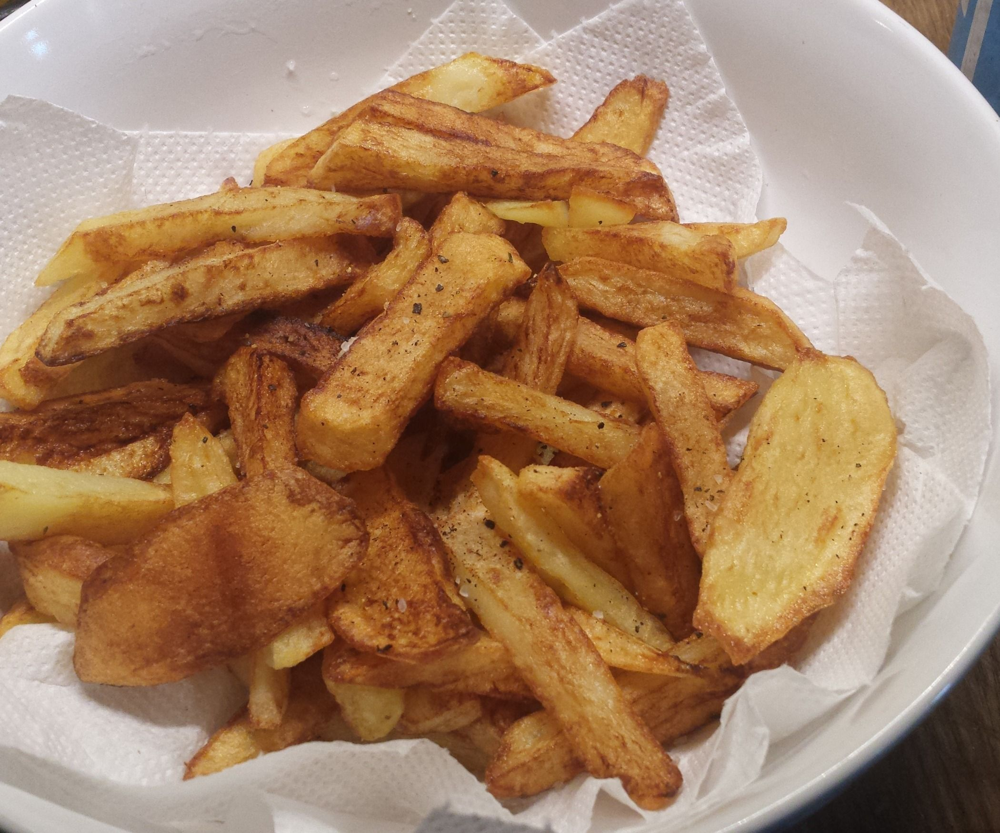

Homemade Chips Recipe

The perfect homemade chips!
This recipe is for the perfect, most crunchy and
well seasoned homemade oven-baked chips!
Ingredients
- 2 Large Potatoes
- 1 Tbsp Paprika
- 2 Tbsp Salt
- 1 Tbsp Pepper
Steps
- Wash the potatoes of all dirt.
-
Cut the potatoes into chips roughly 1/2 inch in thickness.
-
Toss the chips in the salt, pepper and paprika until coated evenly.
-
Place in oven at 170 degrees Celsius for 25 minutes until crispy, golden
brown and enjoy!